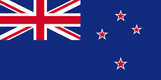
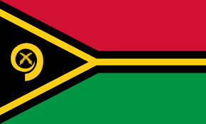

day 2: Exploring Australasia

Map of Australasia.
Introduction to Australasia
Australasia is a region of Oceania that includes Australia, New Zealand, and neighboring islands in the Pacific Ocean. This part of the world is known for its diverse wildlife, stunning natural scenery, and vibrant cultures. From kangaroos and koalas in Australia to the Maori traditions of New Zealand, Australasia is a place of wonder and adventure.
Big Cities
The biggest cities in Australasia include Sydney, Melbourne, Brisbane, and Auckland. These cities are known for their modern skylines, cultural festivals, and famous landmarks. Sydney's Harbour Bridge and Melbourne's Federation Square are must-see spots, while Auckland is known as the "City of Sails" due to its beautiful harbors.
Famous Places
Australasia is home to many famous places that attract visitors from all over the world. The Great Barrier Reef in Australia is the largest coral reef system on the planet, teeming with marine life. New Zealand's Fiordland National Park offers breathtaking fjords and mountains, while Australia's Uluru is a sacred site for Indigenous Australians, known for its massive sandstone monolith.
Culture and Traditions
Australasia has a rich cultural heritage. In Australia, the Aboriginal culture is one of the oldest on Earth, with a history dating back over 65,000 years. In New Zealand, the Maori culture is celebrated through traditional dances, carvings, and language. Festivals like Australia Day and Waitangi Day in New Zealand bring people together to celebrate their national pride.
Heroes and Icons
Heroes from Australasia include Sir Edmund Hillary, who was the first person to reach the summit of Mount Everest. Steve Irwin, known as the "Crocodile Hunter," was famous for his work with wildlife and his love for animals. Another notable figure is Cathy Freeman, an Australian sprinter who won a gold medal in the 2000 Sydney Olympics, making her a national icon.
Countries, Their Flags, and Capital Cities in Australasia
| Country | Flag | Capital City |
|---|---|---|
| Australia |  |
Canberra |
| New Zealand |  | Wellington |
| Fiji |  |
Suva |
| Papua New Guinea |  |
Port Moresby |
| Samoa |  |
Apia |
| Tonga |  |
Nukuʻalofa |
| Palau |  |
Ngerulmud |
| Vanuatu |  | Port Vila |
Did you know?
Australia is home to 21 of the world's 25 most venomous snakes, but don't worry—they prefer to avoid humans!
New Zealand is home to more sheep than people, with a ratio of about 6 sheep for every person.
Fiji is made up of over 300 islands, but only about 100 of them are inhabited by people.
Papua New Guinea has over 800 languages spoken across the country, making it one of the most linguistically diverse places in the world.
Vanuatu is known for its land diving tradition, where men jump from tall wooden towers with vines tied to their ankles—a precursor to modern bungee jumping!